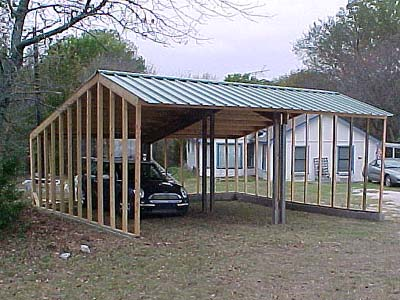

Our new garage Father's been working on
it for about a month now. The tin seemed to go up rather quickly compared
to the roof structure, and
the planning and foundation. The walls were pretty fast, too.
The walls are a stucco-like
Hardiboard and maybe we'll think about electricity later.
We put the barn on hold
for this, so I might kick the cars out sometimes to give the horses a place
stay
and not get muddy.

I've figured out how to back in. Bart
wanted to be sure it was done before he parked inside.
I really like the green. I think it
should end up on all the buildings we have. The little play house will
get it next, then maybe the house.
Unfortunately all our trim is blue, so
that will have to change, too....
I think it's 24' wide and 22' deep.
Should make a nice space to occassionally
put the horses the night before a hunt.
Rafters every two feet resting on
2X10s that are in notches on 4X4s in the ground. Also blocks and bolts
and hardware to hold it all together.